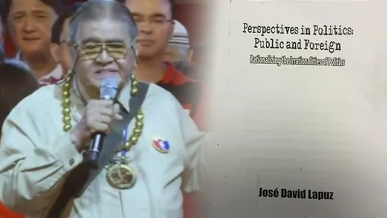

UNDERSTANDING PLAGIARISM:
CASES, CONSEQUENCES, AND RELATED LAWS IN THE PHILIPPINES
Plagiarism is often regarded as a violation of academic and moral integrity, manifesting as the deliberate presentation of another's original work or ideas as one's own without proper acknowledgment. While it may not always constitute a legal offense, certain circumstances elevate plagiarism to a punishable violation under Philippine law. This article explores the concept of plagiarism, notable cases, the consequences imposed, and the laws related to it.
What Is Plagiarism?
The Supreme Court of the Philippines defines plagiarism as the "deliberate and knowing presentation of another person's original ideas or creative expressions as one's own." Academically, it breaches the standards of originality that scholars uphold, making it a serious offense in academic and professional communities.
Author Rights and Copyright Infringement
The Intellectual Property Code (R.A. No. 8293) grants authors exclusive economic and moral rights over their works, including reproduction, adaptation, distribution, public display, and performance. Moral rights further ensure the author's integrity by protecting against unauthorized alterations or distortions.
Copyright infringement arises when these rights are violated. Plagiarism becomes a legal issue when the unauthorized use of protected works breaches copyright laws. For instance, selling, renting, or publicly exhibiting infringing copies constitutes an infringement punishable under the law.
Laws Relating to Plagiarism in the Philippines
Plagiarism, while not inherently a crime, may lead to legal consequences if it involves copyright infringement. Relevant laws include:
| Laws | Description |
|---|---|
| Intellectual Property Code (R.A. No. 8293) |
|
| Cybercrime Prevention Act (R.A. No. 10175) | It covers copyright violations perpetrated online. |
| E-Commerce Act (R.A. No. 8792) | Addresses violations of intellectual property rights in electronic formats. |
Notable Cases of Plagiarism
Several instances of plagiarism have stirred public discourse in the Philippines, highlighting its damaging effects on reputation and careers:
University of Southern Mindanao (USM) Professor
- Riceli Mendoza plagiarized her thesis advisee's work and published it under her name.
- Consequence: Public apology and probable resignation, tarnishing her academic credibility.
UNESCO Appointee Plagiarism Allegation

- Jose David Lapuz was accused of plagiarizing 20 of the 61 articles of the book "Perspectives in Politics: Public and Foreign; Rationalizing the Irrationalities of Politics".
- Consequence: Despite the allegations, he was appointed to a UNESCO position, drawing public criticism.
Valedictory Address Controversy
- Jayvee Ayen, a valedictorian, delivered a speech similar to one by Mariyela Mari Hugo.
- Consequence: Public backlash, institutional investigation, and a formal apology to the original author.
Academic Standards and Acceptable Similarity
While international standards on acceptable similarity vary, SciEnggJ emphasizes zero plagiarism for original works. Limited similarity (up to 15%) may be permissible in scholarly publications, provided proper citation and attribution are observed.
Avoiding Plagiarism and Its Implications
The repercussions of plagiarism extend beyond legal penalties. Academic institutions often impose strict disciplinary actions, including reprimands, suspension, or expulsion. In professional settings, plagiarism can irreparably harm reputations and careers.To steer clear of plagiarism:
- Attribute ideas and direct quotations properly.
- Paraphrase effectively without mirroring the original structure.
- Seek permission to use protected works.
Conclusion
Plagiarism undermines creativity, integrity, and intellectual property rights. While the Philippines has stringent laws to penalize copyright violations, awareness and adherence to ethical practices remain essential in fostering a culture of respect for originality. By understanding the consequences and legal frameworks surrounding plagiarism, individuals can avoid its pitfalls and contribute to a more ethical academic and professional environment.
References:
Guidlines On Plagiarism
When is plagiarism punishable by law—a lawyer specializing on copyright tells us
From teacher to thief: University of Southern Mindanao prof plagiarizes thesis advisee's work
Educator accused of plagiarism named to UNESCO panel